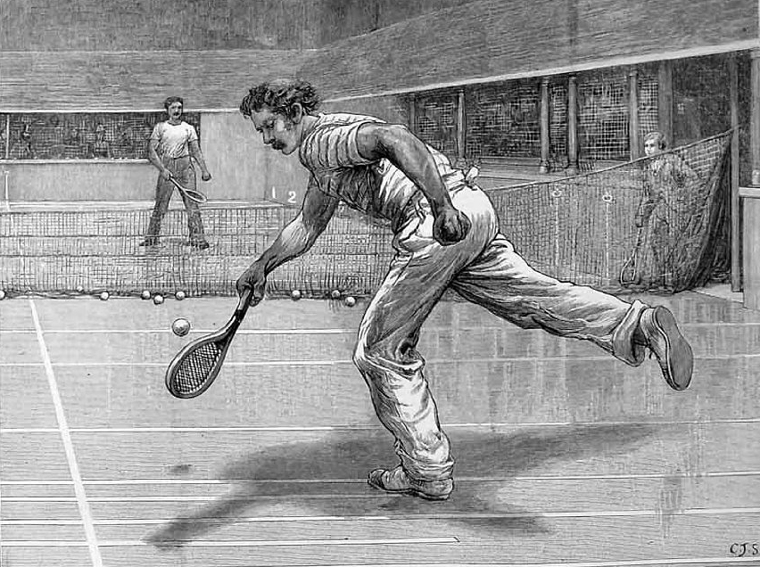
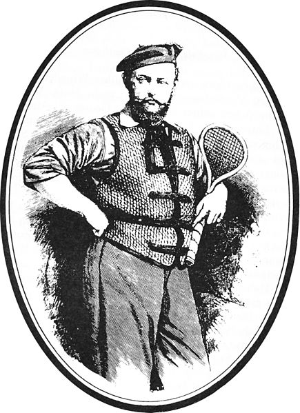

Este deporte tiene su origen en el siglo VI A.C, pues era practicado por Egipto y Persia, con la particularidad de que en lugar de la raqueta se utilizaban las manos. También hay antecedentes en otras culturas como la griega y romana siendo aquí donde se expandió por todo el mediterraneo. Sin embargo los registros más fehacientes surgen del siglo XII en territorio francés.
Inicialmente se practicaba en lugares cerrados y consistía simplemente en empujar una pelota por encima de una red colgada de las paredes laterales del recinto. Cada jugador pujaba la pelota con sus propias manos, en aquel entonces no existían las raquetas que conocemos actualmente. Cuando el jugador golpeaba la pelota gritaba “tenez” del verbo francés “tenir” que significa “ahi va” o “agarre”. De ahí se originó el nombre del juego que derivó a la forma “tenis”. En el siglo XVI Enrique VIII mandó construir en el palacio un sitio para la “tenez”. Este palacio es conocido con el nombre de Hp Court y para facilitar el juego, hizo construir las primeras raquetas de madera.

{kind=link}
Como este deporte se practicaba en los círculos reales, empezó a conocerse como “real tennis”. En el llamado royal game, quien enviaba primero la pelota era un sirviente para que el competidor, generalmente un noble, la devolviera con las pequeñas raquetas de madera; de ahí que el primer disparo en el tenis se denomina “servicio”. La forma moderna del tenis, en cuanto a raquetas y canchas, se inicia en Gran Bretaña realmente en 1873 cuando el Comandante Walter Clopton Wingfield, definió las primeras reglas del deporte. En 1877 se celebraron los primeros campeonatos de aficionados masculinos en Wimbledon, siete años después, en 1884 se realizaron competencias femeninas. Cuando se empezó a practicar este deporte, sólo lo podían hacer las personas que pertenecían a grupos de clases sociales altas. Se fue extendiendo tanto este deporte que debió ser generalizada su práctica. En otras palabras, todos los estratos sociales podían acceder al deporte. De esta manera permitió que en 1912 el tenis se institucionalizara con la creación de la Federación Internacional de Tenis. La admisión de este deporte dentro de los Juegos Olímpicos se hizo en 1988 en los juegos de Seúl, tras una serie de incorporaciones y exclusiones debido al carácter profesional que adquirieron los jugadores. Los torneos más importantes son el de Wimbledon, el de Roland Garros y los abiertos de Estados Unidos y Australia.

Autor desconocido imagen tomada de Wikimedia Commons
{kind=link}
El tenis en Uruguay
El tenis en Uruguay es anterior a la creación de la Asociación Uruguaya de Tenis (AUT). El deporte llegó a Uruguay impulsado por la colectividad inglesa. En mayo de 1915 se fundó el Círculo de Tenis de Montevideo y por entonces se intensificó la práctica de este deporte y surgió la necesidad de regular su desarrollo, organizar y arbitrar los torneos. Así surgió la idea de crear la AUT, lo que se concretó el 9 de agosto de 1915.
Como dato histórico e importante a la hora de establecer la importancia que tuvo este deporte en Uruguay en aquella época, vale destacar que apenas dos años antes, en 1913, se había creado la Federación Internacional de Tenis (ITF) en Londres, comenzando de esta forma la organización mundial de la cual la AUT es miembro, al igual que de la Confederación Sudamericana de Tenis (COSAT) fundada en 1947.
Luego de la creación de la AUT en 1915 le siguieron la federación chilena en 1920, la argentina en 1921, la paraguaya en 1926 y la venezolana en 1927.
Sitio web oficial de la Asociación Uruguaya de Tenis.